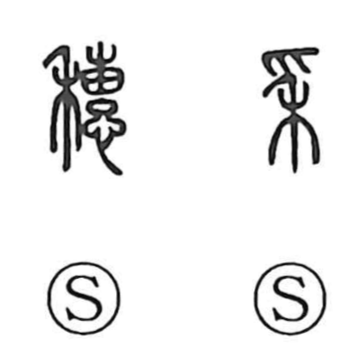

穂

Uncategorized
Kun: ho | On: sui
ear (of grain) ・ spike
Explanation
A phono-semantic character built on 禾 “grain” with a phonetic element. The original form was 穗, using 惠 as the phonetic; a later variant 穟 used 遂 as the phonetic, and from this the on reading sui became established and was also applied to 穂. Bronze forms show the component later written as 惠 depicting three grain spikes sprouting from seeds, vividly evoking the cereal ear; hence the meaning “ear (spike)” and, by extension, “tip of a spike.” In 穂 this 惠 is that ancient graphic form and is distinct from the 恵 that means “mercy.”